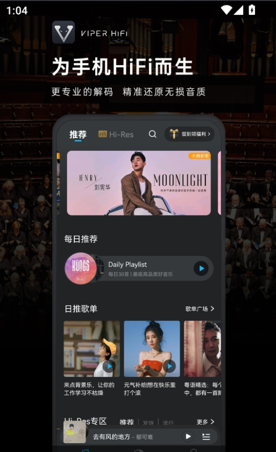
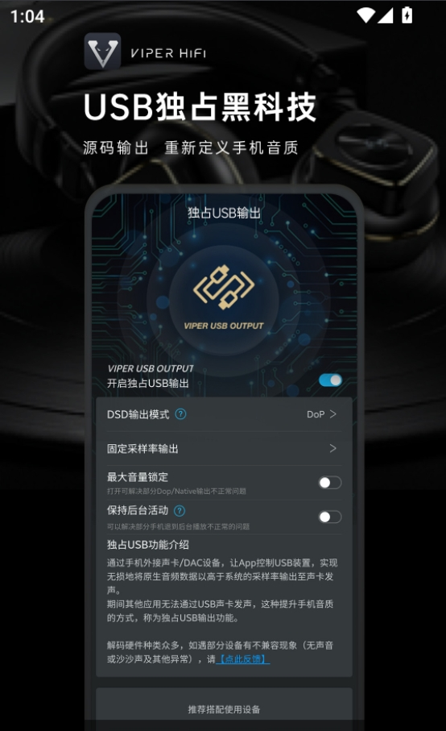

Poweramp 用了两年，从"音质神器"到我通勤路上的默认播放器
装 Poweramp 到现在快两年了。从 v3 初期一路更到现在的 build-909，当初冲着"安卓最强音质"来的，现在却发现真正离不开的不是音质，是那些当初没在意的小功能。
当初为什么装它
说出来简单——换了个支持 Hi-Res 的耳机，想让手机播无损文件试试看。那时候论坛上搜一圈，Poweramp官网 是被提到最多的名字。一次性买断、不贵、EQ 强、格式全，从官方下载就能拿到安装包，没什么理由不装。
装完第一反应是界面挺好看，皮肤选了个暗色的就没再动过。EQ 瞎调了一通，感觉区别也没那么大。心想就这样吧，能播就行。
然后两年过去了。

越用越顺手的：原来手势是这么用的
刚装上的时候，专辑封面左右滑切歌这个手势我是知道的，但下拉唤播放列表、上推收起来这些，头半年基本没碰——总觉得手指在屏幕上划来划去不如点按钮踏实。
不知道从什么时候开始，手形成了条件反射。现在切歌几乎不碰按钮，封面左右一滑就完事。通勤挤地铁的时候尤其有用——一只手抓着扶手，另一只手靠在口袋边缘，盲操作完全没问题。
侧栏从左边缘滑入这个动作，我甚至没意识到自己什么时候学会的。现在换个播放器总觉得"怎么还要点个菜单按钮"。
反倒是那些设置里可以自定义的手势，我一个都没改。长按封面原来是什么就保持什么。够用了，不想折腾。
越用越烦的：EQ 调到最后还是关了
当初冲着 64 段参数 EQ 来的。AutoEq 预设也装了好几个，换着耳机试。
最开始新鲜感很强——每换一副耳机都要花半小时调 EQ，记下一套参数存起来。通勤路上偶尔也会微调两下，乐此不疲。
大概用了八个月的时候，我把 EQ 关了。
不是说 Poweramp 的 EQ 不好——它确实精准，参数 EQ 真的是专业级的。但我发现一个问题：EQ 调完的声音"好看"，但听久了累。尤其长时间通勤路上，EQ 拉起来的高频细节太突出，耳朵会发干。
关了 EQ 直接听原声，反而舒服。现在只保留了一个很小的低音量补偿，防止地铁里听不见。
说个反直觉的：Poweramp 最强的地方可能不是 EQ，是它默认的输出管线。AAudio + Hi-Res Output 开启之后，播放器本身的音色就很干净。EQ 这种东西，不调也罢。
每天离不开的：智能播放列表
这个是我完全没想到的。
Poweramp 有四个内置智能列表：最近添加、最爱、播放最多、最近播放。刚装上的时候我觉得这就是个装饰——我自己建播放列表就行了。
然后发现"最近添加"根本停不下来。每次往手机里拷新文件，打开 Poweramp 第一件事就是点进这个列表，看看刚拷进来的东西能不能直接播。文件命名对不对、格式支不支持，扫一眼就知道了。
"播放最多"更狠。上个月翻了一下，发现排名前三的歌我自己都没印象——是某个深夜随机播放时循环了无数遍的。这个列表像一面镜子，告诉我真实的听歌习惯，而不是我以为的听歌习惯。
现在通勤路上几乎不手动选歌了。播放列表点进去，按场景选一个文件夹或者一个自定义列表（"通勤"、"运动"、"晚上放松"），随机播放。Poweramp 自己帮我把新文件排好序、把播放次数统计好，我只管听。

再也没碰过的：Hi-Res 设置
当初为了开 AAudio 和 Hi-Res Output，翻了好几天论坛和 Poweramp文档 才弄明白。什么 AAudio vs OpenSL ES、什么 USB Exclusive Driver、Bit Perfect 是什么意思……研究了一圈，配置改了又改，把采样率确认到 192kHz 才罢休。
现在呢？设置就保持那一次改完的样子，再也没打开过那个页面。
原因很简单：它工作得太稳定了。设完之后播什么文件都能正常识别采样率和位深，不管是 FLAC 还是 DSD，有线耳机还是 USB DAC，输出参数从来没有掉过链子。既然稳定，就不需要再看了。
反而是当初折腾 Hi-Res 设置的那份热情，现在想起来有点好笑——花了三小时调管线参数，实际听感差异可能连 AB 对比都分不出来。不过那也是一种乐趣，只是现在没那份闲心了。
当初高估了什么，低估了什么
高估了 EQ。64 段参数 EQ + AutoEq 预设，当初觉得这是 Poweramp 的灵魂。实际上它是好，但我用不上那么好。通勤路上、地铁里，再好的 EQ 也打不过环境噪音。真要静下心听，那也是在家里用专门的设备了。
低估了系统集成。Android Auto 连上车载蓝牙自动续播、锁屏界面直接显示封面和控制按钮、Chromecast 把歌投到客厅音箱——这些功能当初觉得"可能用不上"，现在一个都离不开。尤其是 Android Auto，上车自动连接，不用掏手机就能继续听，体验上的差距是实实在在的。
还有皮肤生态。当初选了个暗色皮肤就没再动过，觉得皮肤不重要。直到上次换手机重装，随手试了个带更大封面的皮肤，发现通勤路上瞥一眼就能认出来正在播什么，比原来的小封面实用多了。原来换皮肤不是为了好看，是为了适配场景。
去留结论：还会继续用
两年下来，Poweramp 没有让我惊艳过，也没有让我想卸载。它就是稳定地在那里，播我想听的歌，管我的曲库，在车上、在通勤路上、在偶尔想投到音箱的时候，都能无缝接上。
如果有一天它让我想换了，大概是这几种信号：
- AAudio 输出开始不稳定，偶尔掉采样率或者爆音
- Android 大版本更新后系统集成分支坏了没人修
- 曲库管理功能开始卡，几千首歌要扫好几分钟
除此之外，没什么理由换。播放器这种东西，用到最后拼的不是参数和功能数量，是让你不用去想它。
Poweramp 现在对我来说就是这个状态——打开、选列表、播。顺手整理的资料我在 GitHub、Gitee、GitCode 各传了一份，国内访问选哪个都行。完事。